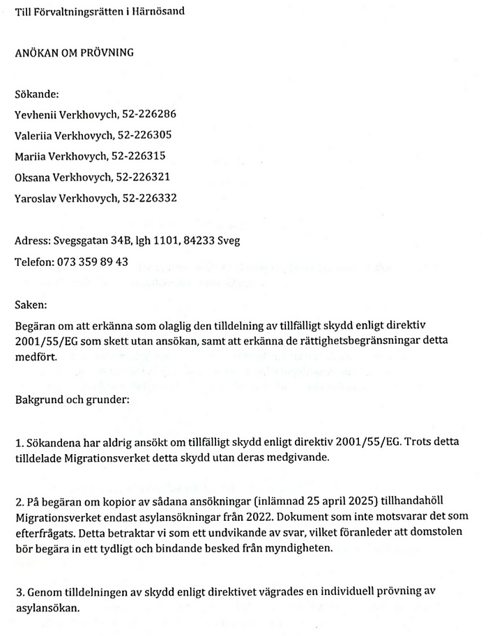

Dossier 0: We Informed the Swedish Ombudsman. This Was the Reply.
Follow
5 min read
·
May 7, 2025
52
1
I am Yevhenii Verkhovych, a Ukrainian national and father of four children. I previously worked with international organizations such as the United Nations country office in Ukraine and the International Committee of the Red Cross. My role involved developing ICT infrastructure and supporting field operations.
My family and I arrived in Sweden on March 22, 2022. At the time, we had three children; our fourth was born in Sweden in February 2025. Until recently, I was employed in Sweden in senior software development roles with companies such as Capgemini and TietoEvry.
This document presents a summary of our correspondence with the Swedish Parliamentary Ombudsman (JO), documenting formal submissions, supplementary materials, and the official response.
The purpose of this compilation is to make available an organized record for review by journalists, legal professionals, or human rights observers. It is presented in a strictly factual, non-accusatory tone, with the aim of promoting transparency and encouraging lawful resolution.
We remain open to dialogue.
This is only a fraction of the documented material, which is available for review by journalists, lawyers, or human rights actors upon request.
A full archive of referenced files, in their original PDF form, is available here:
Proton Drive
Securely store, share, and access your important files and photos. Anytime, anywhere.
drive.proton.me
Reverse Chronology of Key Documents and Correspondence
This section presents a reverse-chronological log of our documented communication with the Swedish Parliamentary Ombudsman (JO), based on submitted letters, supplementary notes, and formal responses. Each entry includes the title of the action, its date, a list of attached documents, and a brief factual description.
Email Chronology — Submissions to the Parliamentary Ombudsman (JO)
📆 7 May 2025
📩 Incoming email from JO. Notification that case 3870–2025 was closed without investigation.
📎 Attachments:
—
📆 6 May 2025
📩 Outgoing email to JO. Describes how the Administrative Court forwarded an unregistered legal submission to Migrationsverket without informing the sender.
📎 Attachments:
—
📆 5 May 2025
📩 Outgoing email to JO. States that Migrationsverket could not provide any applications for temporary protection, only asylum forms from 2022.
📎 Attachments:
—
—
📆 3 May 2025
📩 Outgoing email to JO. Outlines five systemic issues: forced status under directive, retroactive charge, letters to children, blocked work permit, and breach of legitimate expectations.
📎 Attachments:
—
letters was addressed to a newborn child — one month old at the time. The decision denies daily support (dagersättning) without specifying any future date of review. It is based on the family’s previous income, with no indication of the current financial situation or source of subsistence. The letter implies a financial liability tied to the parent, but no formal invoice or contract is attached to support this.
—
—
—
—
📆 17 April 2025
Komplettering till anmälan — JO 6751–2024 (Migrationsverket)
📩 Outgoing email to JO. Notes that decision letters were addressed directly to minors, including a newborn, referring to parental debt without legal explanation.
📎 Attachments:
—
—
—
—
—
—
📆 14 April 2025
📩 Outgoing email to JO. Provides corrected reference link to a withdrawal of retroactive rent claims.
📩 Outgoing email to JO (14 April 2025): Supplement referring to the Uppsala municipality case, where retroactive rent demands were withdrawn after public criticism. The sender reports receiving a similar retroactive invoice from Migrationsverket (67,410 SEK) without prior agreement, shortly after job loss. The email also notes that despite nearly three years of legal work and tax contributions in Sweden, none of the four children received child allowances (barnbidrag). These circumstances are presented as indicative of systemic shortcomings affecting vulnerable groups.
📆 10 April 2025
📩 Outgoing email to JO. Describes that courts denied interim protection despite lack of income and pending legal challenge to the housing debt.
📎 Attachments:
—
— Härnösand FR 1362–25 Ej slutligt beslut 2025–04–09.pdf
📆 9 April 2025
📩 Outgoing email to JO. Shares professional background (UN, ICRC) to clarify the sender’s legal awareness and expectations regarding child protection and rule of law.
📆 9 April 2025
📩 Outgoing email to JO. Forwards a copy of appeal against denial of interim protection concerning a retroactive housing charge.
📎 Attachments:
—
—
P.S. Lessons for Other Refugee Families
This record is individual, but certain patterns observed during the process may be relevant for others. The following points are not legal advice, but practical observations from the course of official communication:
Authorities may assign a legal status (e.g., temporary protection) without an explicit request or signed application. In some cases, this assignment limits access to rights that would have otherwise applied under other legal frameworks.
Retroactive financial demands can be issued without prior contracts or agreements. These demands may be framed as obligations, even when no formal rental agreement or amount was ever discussed or signed.
Letters concerning financial obligations may be sent to minors, including newborns. These letters often reference debts attributed to the parent, without clear legal basis or supporting invoices.
Court submissions may be forwarded by administrative courts to the opposing authority before formal registration. This can occur without notifying the sender, raising concerns about the integrity of the legal process.
Requests for state support (e.g., daily allowances) may be denied based on prior income, with no assessment of current needs. In some instances, no date for re-evaluation is provided, and assumptions are made that a family will remain self-sufficient.
Responses from oversight institutions may take the form of procedural closure without comment on the substance. Even detailed complaints with documentation may be closed without investigation or reasoning.
These points are based solely on documented exchanges and may not reflect broader policies or outcomes in other cases.
Human Rights
Ombudsman
Sweden
Refugee Policy
Child Rights
52
1
Written by J.V. Stämpelflykt
·
From field operations and procurement in UN/ICRC to life under protection. I document what remains unspoken — to ensure it won’t remain unseen.